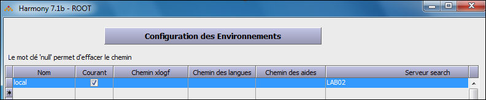
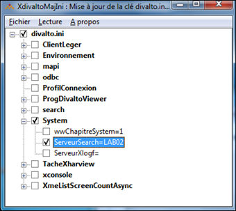

Le nom du serveur Search est un paramètre de l'environnement de l'utilisateur.

Le paramètre « Serveur Search » de l’environnement de l’utilisateur indique le nom du serveur Search à utiliser. Lorsque ce paramètre est présent dans l’environnement, le menu Divalto et la toolbar des Zooms offrent l’accès à la recherche.
Les boutons « Propager » et « Exporter dans un fichier » permettent de diffuser les environnements vers tous les postes clients.
Alternative de paramétrage sans environnements
Pour les sites où la gestion des environnements utilisateurs n'a pas été mise en oeuvre, l'alternative de paramétrage consiste à déclarer le nom du serveur Search directement dans la base de registre du poste client par XdivaltoMajini.

Dans la base de registre HKEY_CURRENT_USER, la valeur de la clé « ServeurSearch » permet d’indiquer le nom du serveur de l’utilisateur courant.
Remarque :
L’option /propager de Xdivaltomajini.exe permet également la diffusion du paramètre vers tous les utilisateurs.